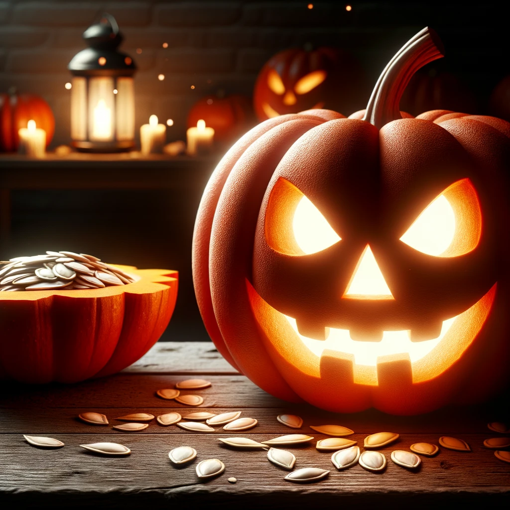
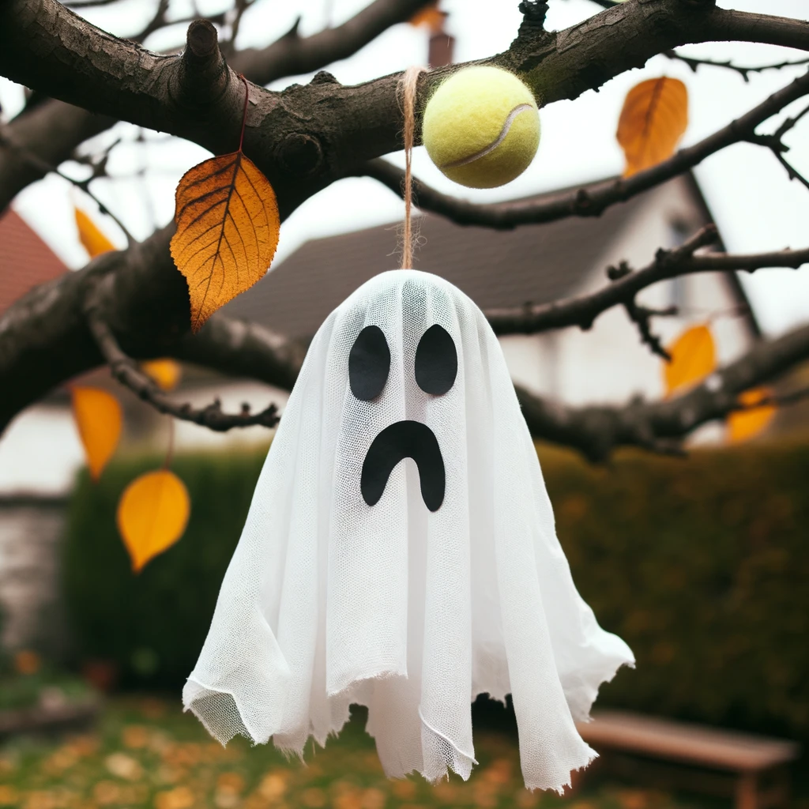
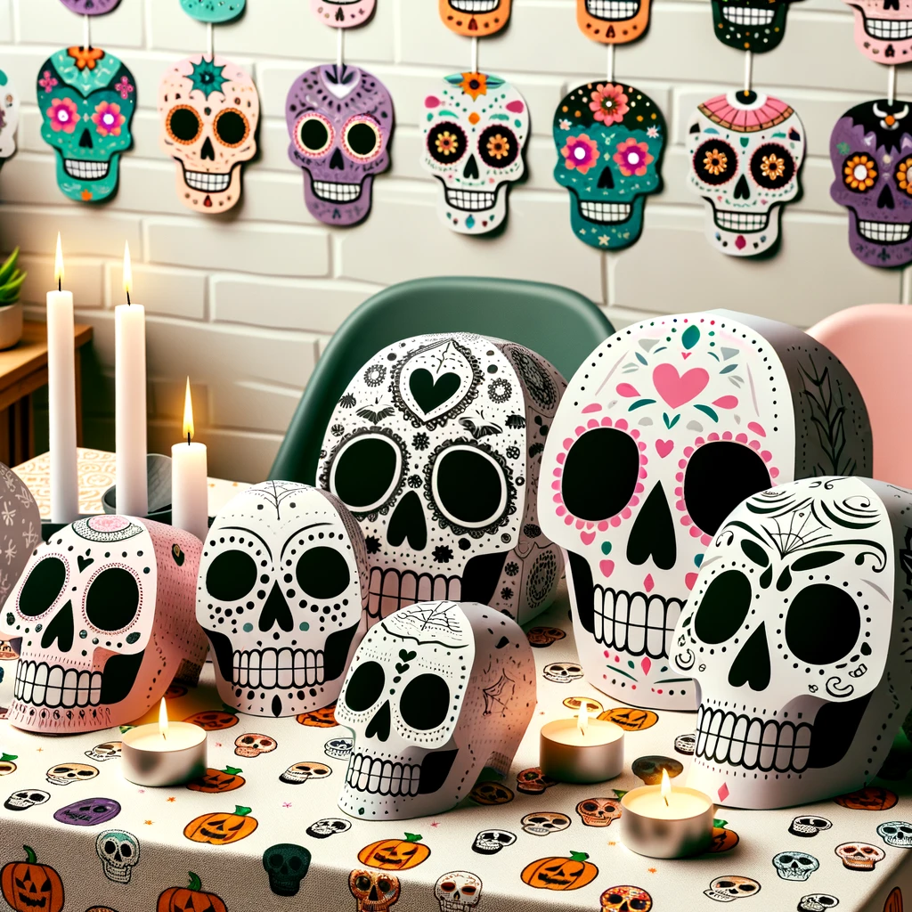

DIY Декор для дома на Хэллоуин
Хэллоуин — это время магии и волшебства. Создайте уникальный декор своими руками и погрузите свой дом в атмосферу праздника!
Тыквенные фонарики
- Выберите подходящую тыкву.
- Отрежьте верх тыквы и выньте семена.
- Вырежьте на тыкве лицо или другой рисунок.
- Вставьте свечу или маленький светодиод внутрь.
Подвесные привидения
- Возьмите белую ткань и мячик (например, теннисный).
- Оденьте мячик тканью и завяжите ткань под мячиком.
- Нарисуйте глаза и рот маркером.
- Повесьте привидение на дерево или веранду.
Черепа из бумаги
- Найдите или нарисуйте шаблон черепа.
- Перенесите его на тонкую картонную коробку или бумагу.
- Вырежьте и разукрасьте по желанию.
- Разместите черепа на стенах или столе.
Теперь ваш дом готов к Хэллоуину! Не забудьте сохранить свой декор в сухом и темном месте для следующего года. Пусть ваш дом станет самым страшным и уютным в этот праздник!